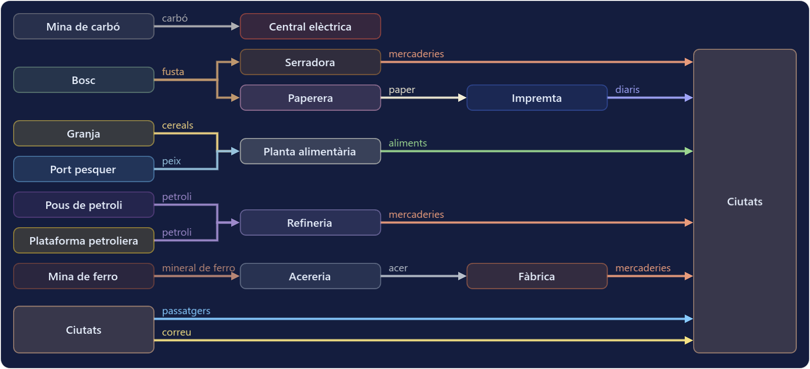
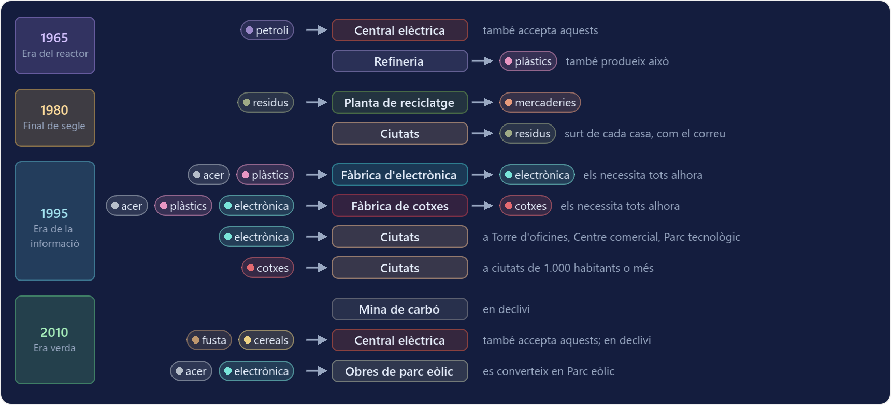

Cadenes industrials
Què va on.
Les matèries primeres van a una planta que les converteix en una cosa que volen les ciutats. Cada fletxa és un lliurament pel qual cobres, de manera que una cadena sencera paga més d'un cop. Aquestes són les cadenes d'una partida que comença el 1950:


- Una planta converteix cada unitat que lliures en més o menys una unitat de producte, a punt per recollir uns dies després: més amb la plantilla completa, menys amb pocs treballadors (mira Treballadors).
- El carbó s'acaba a la central elèctrica: no en surt res.
- La fusta té dos clients: la serradora la converteix en mercaderies i la paperera en paper per a la impremta, que és al costat d'un dels pobles més grans.
- Els diaris es fan vells al cap de 2 dies, així que porta'ls de pressa: els transporten camions, automotors i avionetes de correu. Els accepta qualsevol casa d'un poble de 150 habitants o més.
- De tant en tant una indústria canvia la seva producció. Si es transporta la major part de la seva càrrega, o té molta plantilla, és molt més probable que creixi que no que minvi.
- El Mapa del món (M) mostra on podria lliurar cada indústria del teu mapa.
Les eres canvien les cadenes
Cada era nova porta indústries noves i dona càrrega nova a les antigues. Un tipus nou d'indústria obre al mapa quan comença la seva era (en una partida que comença més tard, ja hi és des del principi).


- Dos materials: la fàbrica d'electrònica necessita acer i plàstics alhora. Guarda el que portes fins que arriba l'altre, i cada tona d'acer amb una de plàstics dona unes dues caixes d'electrònica.
- Els residus surten de cada casa de l'àrea d'una estació, igual que el correu. Una planta de reciclatge els converteix en mercaderies.
- L'electrònica es paga bé però caduca en dies: camions ràpids, trens o avions de càrrega.
- Tres materials: la fàbrica de cotxes necessita acer, plàstics i electrònica alhora, i cada joc d'un de cada dona uns tres cotxes. La seva finestra diu quin material la frena.
- Els cotxes es paguen bé però ocupen molt: només els porten el Atlas Car Transporter i els vagons portacotxes, 10 per vagó. Les ciutats de 1.000 habitants o més els accepten.
- Les obres de parc eòlic necessiten que s'hi lliurin 1.000 tones de acer i 600 caixes de electrònica; quan arriba tot, l'obra es converteix en un parc eòlic. Les ciutats a menys de 24 caselles esperen aleshores només un 80% del temps entre batzegada i batzegada, i les empreses que hi van lliurar es reparteixen fins a +25 de valoració amb els seus ajuntaments, segons el que va aportar cadascuna.
Obertures i tancaments
- Cada pocs anys obre una indústria nova, de qualsevol tipus que hi hagi al mapa: una mina, granja, bosc, pou, plataforma o port on hi càpiga, una planta a prop de qui produeix el que accepta. Mai no s'aixeca sobre res construït.
- Quan una era porta un tipus nou d'indústria, n'obre una cada mes fins que el mapa té les que li toquen.
- Una mina, granja o pou que ningú no ha servit en dos anys, i amb la producció caiguda al 75% de l'habitual, pot passar dificultats. Un amb poc personal és el primer.
- Les notícies avisen un any abans del tancament, i la seva finestra i la seva fitxa diuen quan. Transporta'n la càrrega abans i no tancarà.
- Les plantes no tanquen mai (llevat de les centrals elèctriques, més avall), ni tampoc l'última indústria d'un tipus, així que totes les cadenes continuen sent possibles.
- Les indústries en declivi ja no obren. Des del 2010, una central elèctrica que ningú no ha abastit en dos anys també pot tenir problemes i tancar.
- Quan una tanca, les estacions del costat deixen d'oferir-ne la càrrega, i els rivals abandonen les línies que la servien. Una plataforma petroliera s'emporta el seu moll.
El que produeix cada indústria és a Taula d'indústries.